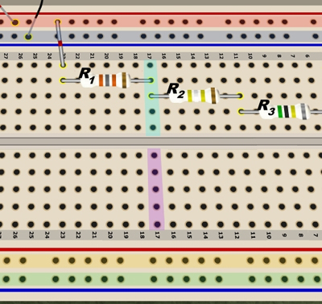

How do breadboards work?
|
 Figure 1. A solderless breadboard, with a few conducting rows and columns highlighted. |
A solderless breadboard is used to temporarily connect components for test measurements. Wire leads from components are inserted into the holes. See Figure 1.
Underneath the array of holes are conducting strips. As the highlighting added to Figure 1 shows, the long horizontal rows at the top and bottom form four separate conducting strips, usually called buses.
Similarly, running vertically down the board, are numbered columns, each connected with conducting strips. Thus, R1 and R2 are connected by virtue of their leads both being inserted into column 17. Can you see another pair of resistors on this breadboard that are electrically connected?
Note that the board is divided into two halves. So, the top half of column 17 is separate from the bottom half of column 17, as shown by the different highlighting.